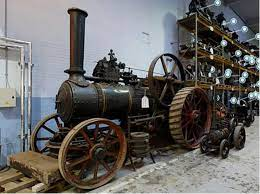
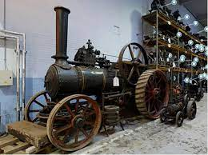

Welcome to the A.R Scan page
The Purpose of the A.R Scan App is to make as easy as possible for the people who visit Kelham Island
to understand what the machines are for and what they mean for the campus.
This has be done by creating clear models of the machines which you can view as you make your way across the site,
this is to help people get an understanding why these machines are here and what they were used for back when they were running.
In addition, when making your way around, you will be given information about what each machine is
and what it is designed to do and when it was made.
By doing this we hope we are ensuring that each one of our visitors gets the full experience from the museum and what it has to offer.
This is an anitique model of a train in Kelham Island
 

The Grand Slam Bomb (Images of The Grand Slam Bomb)
Information and the history about The Grand Slam Bomb
The Grand Slam Bomb was designed by Sir Barnes Wallis during the Second World War. Barnes Wallis, a British Aeronautical Engineer, is most famous for the Bouncing Bomb and the Dambuster’s Raid.
Sir Barnes Wallis also developed the Tallboy bomb which weighed 12,000lbs before designing the Grand Slam Bomb which weighed almost twice as much and was officially known as the 'Bomb, Medium Capacity, 22,000 lb'.
It was used by RAF Bomber Command against strategic targets such as bridges and viaducts, railways and U-boat shelters.
The bombs were produced by Vickers and Co, Sheffield, at their River Don Works, however only 30 to 40 of the bombs were ever actually made and they were only used during 1945, the last year of the war.
The Grand Slam Bomb is in the Guinness Book of World Records as the heaviest bomb in the world.
It weighs 10 Tonnes (22,000lbs) - hence it's nickname Ten Ton Tess - and the complete bomb with its tail fin was 7.75 metres long.
The bombs were carried by Lancaster Bomber planes which were specially adapted to carry the weight.
The Grand Slam Bomb was also known as the earthquake bomb because of the effect it had on the ground.
It was designed to go up to 24 metres into the earth before exploding, undermining the foundations of structures and causing them to collapse.
An example of the main portion of the Grand Slam Bomb, without the lightweight tail, can be seen at the museum.
Want to try using the QR code to expereince the train model in A.R?
Place your camera onto the QR code to be able to see the A.R.